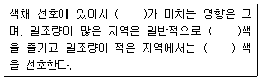
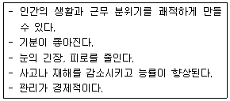
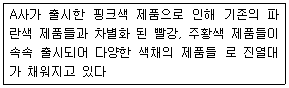
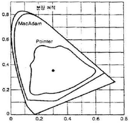
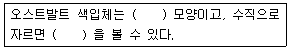
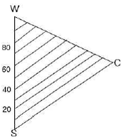

컬러리스트기사 (2015-03-08 기출문제)
1과목: 색채심리 마케팅
1. 다음의 ( )안에 들어갈 단어를 순서대로 가장 알맞게 나열한 것은?

- 지역정서, 장파장, 단파장
- 지역정서, 단파장, 장파장
- 기후, 장파장, 단파장
- 기후, 단파장, 장파장
(정답률: 73%)

2. 색채선호 경향에 관한 설명이 틀린 것은?
- 일반적으로 성인의 선호색이 파랑이라고 하지만 성별 또는 연령별 집단에 따라서 다른 특성을 보이기도 한다.
- 동양, 아프리카 문화권은 서구와는 다른 감각적 변수에 의한 색채신호가 있다.
- 색에 대한 일반적인 선호 경향과 특정 제품에 대한 선호색은 다르다.
- 아동기는 단파장의 특정 색에 편중하여 선호한다.
(정답률: 85%)
3. 마케팅에서 시장 세분화의 기준 중 인구 통계학적 속성과 관련이 없는 것은?
- 소비자 계층을 묘사하는데 효과적인 정보 제공
- 시장을 세분화 할 수 있는 정보 제공
- 물가 지수 정보 제공
- 소비자 라이프스타일 정보 제공
(정답률: 72%)
4. 컬러마케팅 전략에 대한 설명이 틀린 것은?
- 시장세분화 방법은 인구학적, 지리적, 사회문화적, 행동 분석적 변수에 의한 세분화로 구분 된다.
- 시장세분화 조건으로는 측정가능성, 접근가능성, 실질성, 경쟁성 등을 고려하여야 한다.
- 브랜드의 색채마케팅 목적은 차별화를 통해 긍정적인 이미지를 형성하는 것이다.
- 시대적 상황이나 환경에 특별히 영향을 받지 않는다.
(정답률: 97%)
5. 색의 상징적 의미에 대한 연결이 옳은 것은?
- 비탄 - 빨강
- 미움 - 주황
- 부활 - 파랑
- 생명 - 녹색
(정답률: 70%)
6. 제품수명주기를 옳게 나열한 것은?
- 성장기 → 도입기 → 성숙기 → 쇠퇴기
- 도입기 → 성숙기 → 성장기 → 쇠퇴기
- 성숙기 → 도입기 → 성장기 → 쇠퇴기
- 도입기 → 성장기 → 성숙기 → 쇠퇴기
(정답률: 91%)
7. 마케팅 믹스에 대한 설명이 가장 옳은 것은?
- 기업이 시장에서 자극요소로 활용할 수 있는 모든 수단을 활용하는 것이다.
- 주로 제품의 판매와 촉진이라는 개념으로, 유통 이후를 말한다.
- 재화의 유통이라는 전통적 개념의 마케팅이다.
- 기업이 모든 소비자를 대상으로 대량생산, 대량분배를 하는 것이다.
(정답률: 82%)
8. SD법 (Semantic Differential Method)에 대한 설명이 틀린것은?
- 조사대상의 요소를 나타내는 형용사를 반대의 의미를 갖는 형용사와 쌍을 이루도록 하여, 이들 형용사 쌍을 카테고리 척도에 의해 여러 사람이 평가 한다.
- 미묘한 밝기의 차이와 같은 감각 지각 레벨에서 대상의 얼마 안 되는 차이를 측정하는 것도 가능하다.
- 분석에 의해 만들어지는 이미지 프로필은 각 평가 대상마다 각각의 평정 척도에 대한 평가 평균치를 구해서 그 값을 선으로 연결한 것이다.
- 대상의 종류가 변하면 그 인상을 평가하는데 적합한 척도도 달라진다.
(정답률: 63%)
9. 다음은 주로 무엇에 관한 효과인가?

- 색채혼색
- 색채심리
- 색채대비
- 색채조절
(정답률: 67%)
10. 소비자 행동에 영향을 미치는 요인 중 심리적 요인에 속하는 것은?
- 동기, 지각, 학습
- 문화, 하위문화, 사회계층
- 라이프스타일, 나이, 직업
- 가족, 준거집단, 대면집단
(정답률: 75%)
11. 색의 온도감에 대한 설명 중 틀린 것은?
- 고명도의 무채색은 따뜻하게 느껴진다.
- 단파장의 색은 차갑게 느껴진다.
- 장파장의 색은 따뜻하게 느껴진다.
- 명도보다 색상에 의한 효과가 크다.
(정답률: 90%)
12. 소비자 행동의 의사결정 과정에 영향을 미치는 변수를 개인/사회/상황변수로 나눌 때 다음 중 상황변수에 포함되는 것은?
- 구매 장소, 시간, 목적
- 문화, 준거집단, 가족
- 문제인식, 탐색, 평가
- 동기, 가치관, 생활 유형
(정답률: 80%)
13. 색채 마케팅 전략을 수립하는데 있어서 생활유형(Life Style)이 대두된 이유가 아닌 것은?
- 물적 충실, 경제적 효용의 중시
- 소비자 마케팅에서 생활자 마케팅으로의 전환
- 기업과 소비자간의 커뮤니케이션 장애제거의 필요성
- 새로운 시장 세분화(market segmentation) 기준으로서의 생활유형이 필요
(정답률: 56%)
14. 색채 조절을 이용한 색채 계획의 설명으로 틀린 것은?
- 따뜻한 느낌을 주는 색은 다가오는 듯 크게 보인다.
- 거실이나 호텔의 휴게실과 같이 시간이 비교적 더디게 가는 편이 더 유쾌하게 느껴질 수 있는 공간에 난색을 적용한다.
- 빨간 조명 아래서는 물건이 더 가볍게 느껴진다.
- 실내의 환경색 중 천장을 가장 밝게 하는 것이 안정감을 준다.
(정답률: 76%)
15. 군집(Cluster) 표본추출 과정에 대한 설명이 아닌 것은?
- 모집단을 모두 포괄하는 목록을 가지고 체계적으로 선정해야 한다.
- 모집단을 하위 집단으로 구획하여 하위 집단을 뽑는다.
- 잠정적 소비계층을 찾기 위해서는 전국적인 소비자 모두가 모집단이 된다.
- 편의가 없는 조사가 되기 위해서는 표본을 무작위로 뽑아야 한다.
(정답률: 38%)
16. SD법의 첫 고안자인 오스굿은 요인분석을 통해 의미 공간의 대표적인 구성요인을 밝혀냈다. 다음 중 그 요인이 아닌것은?
- 평가요인
- 역능요인
- 활동요인
- 심리요인
(정답률: 52%)
17. 색채의 선호에 대한 설명 중 틀린 것은?
- 서구문화권의 영향을 받은 대부분의 국가에서는 성인의 절반 이상이 청색을 가장 선호하는 색으로 꼽는다.
- 색채선호는 인성, 문화 등의 요인이 혼합되어 나타나므로 민족마다 상이한 선호경향을 보인다.
- 제품의 특성에 따라 선호되는 색채는 고정된 것이 아니라, 재료의 개발 빛 디자인 유행에 따라 변화된다.
- 자동차의 색채는 지역환경, 빛의 강약, 자연환경 등에 따라 지역마다 비슷한 선호경향을 보이며, 차의 크기와는 큰 관련성을 보이지 않는다.
(정답률: 72%)
18. 마케팅에 관한 옳은 정의는?
- 산업제품을 대량 생산하는 것
- 자기 회사 제품의 실태를 파악하는 것
- 산업제품을 디자인하고 제작하는 과정
- 산업제품이 생산자에서 소비자에게 전달되는 모든 과정
(정답률: 78%)
19. 20대 대학생을 타깃으로 하는 음료수의 패키지 디자인을 위한 색채조사방법으로 적절하지 않은 것은?
- 개발하려는 신제품에 대한 명료화
- 제품 소비자의 연령 및 사회 문화적 배경에 대한 탐색
- 조사자의 편의에 의한 표본 집단의 선정
- 제품 소비자 모집단에 대한 명확한 이해
(정답률: 80%)
20. 눈의 긴장과 피로를 줄여주고 사고나 재해를 감소시켜 주는데 적합한 색은?
- 산호색
- 감청색
- 밝은 톤의 노랑
- 부드러운 톤의 녹색
(정답률: 82%)
2과목: 색채디자인
21. 시각디자인의 커뮤니케이션 기능과 종류가 잘못 연결 된 것은?
- 지시적 기능 - 화살표, 교통표지
- 설득적 기능 - 애니메이션, 포스터
- 상징적 기능 - 일러스트레이션, 패턴
- 기록적 기능 - 신문광고, 심벌마크
(정답률: 75%)
22. 벽화, 슈퍼그래픽, 미디어 아트 등은 공공매체디자인 중 어디에 속하는가?
- 옥외광고매체
- 환경연출매체
- 행정기능매체
- 지시/유도기능매체
(정답률: 64%)
23. 다음 중 환경디자인 영역과 가장 거리가 먼 분야는?
- 도시디자인
- 건축디자인
- 조경디자인
- 이벤트디자인
(정답률: 86%)
24. 보기에서 설명하는 제품의 색채 디자인은 제품의 수명 주기 중 어느 단계에 해당하는 것인가?

- 도입기
- 성장기
- 성숙기
- 쇠퇴기
(정답률: 84%)
25. 환경디자인에 있어 경관에 대한 설명 중 틀린 것은?
- 경관은 원경-중경-근경으로 나누어진다.
- 경관디자인에 있어서 전체보다는 각 부분별 특성을 살리는 것이 중요하다.
- 경관은 시간적, 공간적 연속성으로 파악해야 한다.
- 경관디자인을 통해 지역적 특성을 살릴 수 있다.
(정답률: 100%)
26. 색채 효과를 높이기 위한 판매장의 조명 계획으로 바람직하지 않은 것은?
- 전체적으로 편안한 느낌을 주는 밝은 색으로 처리하여 여유 있게 상품을 관찰 할 수 있도록 한다.
- 안경점, 책방 등은 약간 밝은 조명으로 하고, 레스토랑이나 카페는 적당히 낮은 조명이 효과적이다.
- 강렬한 단일 광원을 써서 빛을 집중시키는 것이 여러 개의 작은 광원으로 나누어 분산 시키는 것보다 효과적이다.
- 거울이나 스테인리스 등의 시설물로부터 생기는 반사광이 고객의 눈을 부시게 하지 않도록 조명 각도를 조절한다.
(정답률: 97%)
27. 색채 계획의 단계에 대한 설명 중 틀린 것은?
- 조사 : 색채 조사자의 풍부한 생활경험을 바탕으로 조사하고 분석 한다.
- 기본 계획 : 색채의 전체적인 콘셉트를 수립하고 방향을 설정한다.
- 실시계획 : 기본계획에서 정해진 색의 사용방안과 변화와 통일에 대한 구체적인 색채 좌표와 생산 처방을 한다.
- 시공 감리 : 기본 계획부터 실시 단계까지가 잘 표현되었는지를 반드시 현장에서 검사해야 한다.
(정답률: 58%)
28. 다음 중 메이크업 색채계획 중 틀린 것은?
- 눈이 커 보이는 아이 메이크업을 원한다면 한 가지 컬러를 정하고 비슷한 톤의 다른 컬러를 그라데이션하는 게 무난하다.
- 활동적이고 경쾌한 이미지를 표현하려면 선명하고 밝은 원색 컬러를 사용한다.
- 동일 톤의 배색은 침착하고 일관성 있는 통일 된 이미지를 준다.
- 얼굴을 작고 입체적으로 보이기 위해서는 얼굴에 전체적으로 같은 색감과 질감을 사용한다.
(정답률: 90%)
29. 패션디자인의 유행색에 대한 설명으로 틀린 것은?
- 유행색이 제시되는 시점과 실제 소비자들이 착용하는 시기는 차이가 있다.
- 패션 유행색 변화는 계절에 의한 영향이 가장 크다.
- 패션 유행색은 다른 분야에 비해 비교적 느리게 변한다.
- 패션제품 제작과정상 보통 2년 정도 앞서 유행색이 예측된다.
(정답률: 93%)
30. 유행색의 색채계획에 대한 설명으로 틀린 것은?
- 과거에서 현재까지의 유행색 사이클을 조사한다.
- 현재 시장에서 주요 군을 이루고 있는 색과 각 색의 분포도를 조사한다.
- 전문기관의 데이터베이스를 중심으로 임의의 색을 설정하여 색의 경향을 결정한다.
- 컬러 코디네이션(Color Coordination)을 통해 결정 된 색과 함께 색의 이미지를 통일화 시킨다.
(정답률: 60%)
31. 인간생활의 질적 수준을 향상시키기 위하여 실시하는 색채 디자인에서 조형요소의 전체적인 조화와 아름다움을 추구하는 것 의 목적은?
- 독창성
- 심미성
- 경제성
- 문화성
(정답률: 86%)
32. 디자인이란 용어는 라틴어 designare에서 유래하였다. 디자인의 핵심적인 의미를 가리키는 이 라틴어의 뜻은?
- 계획하다
- 색칠하다
- 추구하다
- 완성하다
(정답률: 90%)
33. 디자인 요소에 관한 설명으로 틀린 것은?
- 기하학의 도형과 같은 이념적인 형은 그 자체만으로 조형이 될 수 있다.
- 넓은 광장 한 가운데 있는 작은 분수나 기념탑 같은 것은 점적(點的) 요소라 할 수 있다.
- 선은 길이와 방향과 형태를 가지고 있으며, 두 점을 연결시켜 준다.
- 파르테논 신전의 수직 지둥은 선적(線的) 요소라 할 수 있다.
(정답률: 48%)
34. 다음 중 신속하고 안전하게 대상을 인식하는데 있어 색채가 기여하는 특성이 아닌 것은?
- 시인성
- 주목성
- 식별성
- 개별성
(정답률: 72%)
35. 디자인에 있어 대칭의 특성이 아닌 것은?
- 정돈하기 쉬운 기본적인 스타일이다.
- 통일감이 있는 균형을 얻을 수 있다.
- 정지적이고 전통적인 효과를 얻는데 적합하다.
- 좌우를 부분조절 함으로써 동세를 나타낸다.
(정답률: 73%)
36. 19세기의 '산업 없는 생활은 죄악이고, 미술 없는 산업은 아만이다'라는 심미적 이상주의 사상에 뿌리를 둔 사조는?
- 미술공예운동
- 독일공작연맹
- 아르누보
- 구성주의
(정답률: 56%)
37. '형태는 기능을 따른다' 라고 기능미를 주장한 사람은?
- 윌리엄 모리스
- 발터 그로피우스
- 루이스 설리반
- 모흘리 나기
(정답률: 68%)
38. 바우하우스의 교육이념과 철학에 대한 설명이 틀린 것은?
- 예술가의 가치 있는 도구로서 기계를 적극적으로 활용하였다.
- 공방교육을 통해 미적조형과 제작기술을 동시에 가르쳤다.
- 제품의 대량생산을 위해 굿 디자인(Good Design)의 개념을 설정하였다.
- 디자인과 미술을 분리하기 위해 교육자로서의 예술가들을 배제하였다.
(정답률: 77%)
39. 도형과 바탕의 반전에 관한 설명 중 바탕이 되기 쉬운 영역의 예에 해당하는 것은?
- 기울어진 방향보다 수직, 수평으로 된 영역
- 비대치칭 역역보다 대칭형을 가진 영역
- 위로부터 내려오는 형보다 아래로부터 올라가는 형의 영역
- 폭이 일정한 영역보다 폭이 불규칙한 영역
(정답률: 62%)
40. 디자인의 원리로만 짝지어진 것은?
- 반복(repetition), 조화(harmony)
- 명암(value), 대비(contrast)
- 통일(unity), 색채(color)
- 크기(size), 형(shape)
(정답률: 83%)
3과목: 색채관리
41. 색채 소재에 대한 설명 중 틀린 것은?
- 염료를 사용할수록 가시광선의 흡수율은 떨어진다.
- 염료로서의 역할을 하기 위해서는 외부의 빛에 안정되어야한다.
- 가공하지 않은 상태에서의 무명천은 소색(브라운 빛의 노란색)을 띤다.
- 합성안료로 색을 낼 때는 입자의 크기가 중요하므로 크기를 조절한다 .
(정답률: 57%)
42. 육안조색 시 필요한 사항이 아닌 것은?
- 조색시 기준광원을 명기한다
- 광택이 변하는 조색의 경우 광택기를 필요로 한다
- 결과의 검사는 3인 이상이 같이 하는 것이 좋다
- 자연광을 가급적 이용한다
(정답률: 73%)
43. 사물이나 이미지를 디지털 정보로 바꿔주는 입력 장치가 아닌 것은?
- 디지털 캠코더
- 디지털 카메라
- LED 모니터
- 스캐너
(정답률: 64%)
44. CCM의 특성으로 볼 수 없는 것은?
- 스펙트럼 데이터를 이용하므로 아이소머리즘을 실현 할수 있다
- 컬러런트의 양을 조절하므로 조색에 걸리는 시간을 단축 할수 있다
- 최소량의 컬러런트를 사용하여 조색하므로 원가가 절감된다
- CCM에서 조색 된 처방은 여러 소재에 동일하게 적용 할 수있다.
(정답률: 65%)
45. 산업 현장에서 자주 사용하는 측색기의 백색 기준물로 알맞은 것은?
- 백색 세라믹 타일
- 알루미늄 판
- 압축 우드락
- 두꺼운 흰색 종이
(정답률: 58%)
46. 반사색에 대한 조명과 측정의 기하학적 기준(geometry) 중, 45도의 원주형(환형) 광원으로 조명하고 수직으로 측정하는 조명과 측색 조건을 올바르게 표기한 것은?
- (45a : 0)
- (0 : 45x)
- (45x : 0)
- (45 :0 )
(정답률: 35%)
47. 태양은 자연광원으로 하루 동안 일출, 정오, 일몰을 거치면서 다른 색온도를 갖는다. 다음 중 가장 색온도가 높은 경우는?
- 아침 여명
- 한낮의 태양
- 맑은 하늘
- 저녁노을
(정답률: 52%)
48. 육안조색 시 사용하는 기준표준광원의 색온도는?
- 2856k
- 4874k
- 6504k
- 6774k
(정답률: 58%)
49. 천연염료로만 구성 된 것은?
- 동물염료, 광물염료, 식물염료
- 광물염료, 합성염료, 식용염료
- 식물염료, 형광염료, 식용염료
- 홍화염료, 치자염료, 반응성염료
(정답률: 75%)
50. RGB 시스템에 관한 설명이 틀린 것은?
- RGB 세 요소의 값이 모두 255인 경우 검은색이 된다.
- RGB 각각 8비트 색채인 경우 0~255까지 값의 256 단계를 갖는다.
- 각각 세개의 컬러가 별도로 작용하여 색을 표현하는 방법이다.
- 디지털 색채 시스템 중 가장 안정적이며 널리 쓰인다.
(정답률: 50%)
51. 조건등색(메타리즘:metamerism)에 관한 설명으로 틀린 것은?
- 분광 반사율이 다르면서 같은 색자극을 일으키는 현상인 조건등색(metamerism)을 가르킨다.
- 광원의 차이 또는 관측자의 차이에 따라 등색으로 보이거나, 다른 색으로 보이는 조건등색(metamerism)으로 구분된다.
- 조건등색 지수는 기준광에서 같은 색인 메타머가 피시험광에서 일으키는 색차로 주어지는데, 이 때 사용되는 색차식은 CIE94 색차식을 사용한다.
- 컴퓨터 자동배색은 분광반사율을 일치시키는 메타메리즘 매치칭이 가능하다.
(정답률: 45%)
52. 프린터에서 사용하는 계조 표현 방법은?
- 하프톤 (half tone)
- 컬러매칭 (color matching)
- 칼리브레이션 (calibration)
- 영상처리 (image processing)
(정답률: 52%)
53. 염료에 대한 설명 중 틀린 것은?
- 염료는 천연염료와 인공염료로 나눌 수 있다.
- 염료분자는 직물에 흡착되어야 한다.
- 염료는 외부의 빛에 대하여 안정해야 한다.
- 직접염료는 셀롤로스 섬유 및 단백질 섬유에 염색되지 않는다.
(정답률: 56%)
54. 기기로 측색을 한 후 색채 측정결과에 반드시 첨부해야 할 사항이 아닌 것은?
- 측정일의 온/습도
- 색채측정 방식
- 표준광의 종류
- 표준관측자
(정답률: 66%)
55. 표준광원에 대한 설명 중 틀린 것은?
- 인공 광이 자연광의 분광분포와 일치하는 정도를 연색성 지수 라고 한다.
- 모든 광원은 연색성의 지수가 높을수록 색을 많이 보여주는 광원이다.
- 프로젝터의 경우 백열 광원을, 슬라이드 투사판의 경우 형광 광원을 이용한다.
- 광원에 따라 같았던 색도 다르게 보이는 것은 두 색의 분광 반사도의 차이에서 비롯된다.
(정답률: 46%)
56. 측색 방법 중 상자극치 수광방식에 대한 설명이 틀린 것은?
- 세 개의 필터와 광검출기로 구성된다.
- 필터와 센서가 일체화 되어 X, Y, Z 자극치를 읽어 낸다.
- 여러 광원과 시야에 대한 X, Y, Z 값을 읽어낸다.
- 색차계라고도 하며, 간단히 색채를 비교할 때 사용한다.
(정답률: 42%)
57. 색에 대한 설명으로 틀린 것은?
- 색의 3속성으로 표시되는 시각에 의해 인식되는 물체의 반사 특성
- 색의 3속성으로 표시되는 시각에 의해 인식되는 빛 자체의 분광 특성
- 색의 3속성으로 표시되는 시각의 원인이 되는 색자극의 분광 특성
- 색의 3속성으로 표시되는 시각에 의해 인식되는 조도의 체계와 이에 따른 시각의 특성
(정답률: 55%)
58. 색채의 영역은 여러 가지 여건에 의하여 상당한 제약을 받는다. 아래 그림에 대한 설명으로 틀린 것은?

- 분광궤적은 단색광들에 의하여 최대한으로 구현되는 색채의 영역이다.
- MacAdam의 영역은 중간 명도(L:*50)에서 색채의 이론상 한계는 감소한다.
- Pointer의 영역은 실제로 존재하는 색료에 의하여 중명도의 색역은 감소한다.
- 고명도나 저명도로 내려갈 경우 색역은 다소 확장된다.
(정답률: 56%)
59. 디바이스 종속 색체계(device dependent color system)는?
- CIE XYZ 색체계, LUV 색체계, CMYK 색체계
- LUV 색체계, CIE XYZ 색체계, ISO 색체계
- RGB 색체계, HSV 색체계, HLS 색체계
- CIE RGB 색체계, CIE XYZ 색체계, CIE LAB 색체계, ISO 색체계
(정답률: 43%)
60. CIE 1960 UCS 색도 그림 위에서 완전 방사체 궤적에 직교하는 직선 또는 이것을 다른 적당한 색도 그림 위에 변환시킨 것은?
- 방사 휘도율
- 입체각 반사율
- 등색온도선
- V(入) 곡선
(정답률: 47%)
4과목: 색채지각론
61. 파란색 옷 위에 달려있는 남색 리본이 보라색 옷 위에 달려있는 남색 리본보다 붉게 보이는 현상은?
- 색상대비
- 명도대비
- 채도대비
- 연변대비
(정답률: 54%)
62. 색의 경연감에 대한 설명 중 옳은 것은?
- 채도의 영향을 가장 적게 받는다.
- 색상의 영향을 가장 많이 받는다.
- 대비가 강한 배색은 딱딱하게 느껴진다.
- 한색계는 부드럽게 느껴진다.
(정답률: 60%)
63. 다음 중 무거운 작업도구를 사용하는 작업장에서 심리적으로 가볍게 느끼도록 하는 색으로 가장 효과적인 것은?
- 고명도, 고채도인 한색계열의 색
- 저명도, 고채도인 난색계열의 색
- 저명도, 저채도인 한색계열의 색
- 고명도, 저채도인 난색계열의 색
(정답률: 67%)
64. 가법혼합의 결과에 관한 설명 중 틀린 것은?
- 파랑과 녹색의 혼합 결과는 시안(C)이다
- 녹색과 빨강의 혼합 결과는 노랑(Y)이다
- 파랑과 빨강의 혼합 결과는 마젠타(M)이다
- 파랑과 녹색과 노랑의 혼합은 백색(W)이다
(정답률: 69%)
65. 복도를 길어 보이게 하려면 다음 중에서 어떤 색을 쓰는 것이 좋을까?
- 따뜻한 색
- 차가운 색
- 명도가 높은 색
- 채도가 높은 색
(정답률: 57%)
66. 빨강과 청록 체크무늬의 스카프에서 볼 수 있는 색의 대비 현상과 동일한 사례로 옳은 것은?
- 남색 치마에 노란색 저고리
- 주황색 셔츠에 초록색 조끼
- 자주색 치마에 연두색 셔츠
- 보라색 치마에 귤색 블라우스
(정답률: 65%)
67. 다음 중 명시도가 가장 낮은 것은?
- 빨강 바탕 위의 초록
- 검정 바탕 위의 노랑
- 흰색 바탕 위의 노랑
- 노랑 바탕 위의 초록
(정답률: 60%)
68. 전자기파의 존재를 이론적으로 유도하여 그 속도가 광속도와 일치한다는 사실을 발견하면서 빛의 전자기파설을 확립한 학자는?
- 맥스웰
- 아인슈타인
- 맥키콜
- 뉴턴
(정답률: 59%)
69. 색의 3속성을 일으키는 색의 3요소가 아닌 것은?
- 주파장
- 포화도
- 반사율
- 연색성
(정답률: 60%)
70. 컬러인쇄를 자세히 들여다보면 작은 망점으로 이루어진 것이 보인다. 이 망점 인쇄의 원리에 대한 설명 중 옳은 것은?
- 망점의 색은 노랑, 시안, 마젠타로 되어 있다.
- 색이 겹쳐진 부분은 가법혼색의 원리가 적용된다
- 일부 나열된 색에는 병치혼색의 원리가 적용된다.
- 인쇄 된 형태의 어두운 부분을 안정시키기 위하여 빨강, 녹색, 파랑을 사용한다.
(정답률: 47%)
71. 색채를 인지하는 인간의 눈 구조 및 메카니즘에 대한 설명이 옳은 것은?
- 빛에너지가 전기화학적인 에너지로 변환되는 부분은 망막이다.
- 빛은 각막-수정체-유리체-동공-망막의 순서로 전달된다.
- 망막의 맹점은 광수용기가 다발적으로 존재하므로 대상을 구분하는 지점이 된다.
- 인간의 홍채에 있는 광수용기는 간상체와 추상체로 대별된다.
(정답률: 38%)
72. 다음 색채의 감정효과 중 리프만 효과(Liebmann's effect)와 관련이 높은 것은?
- 경연감
- 온도감
- 명시성
- 주목성
(정답률: 38%)
73. 다음 중 가법 혼색 원리에 의한 것이 아닌 것은?
- 무대조명
- 컬러인쇄 원색 분해 과정
- 컬러 모니터
- 컬러 사진
(정답률: 56%)
74. 가법혼색에 대한 설명으로 틀린 것은?
- CIE 색체계는 3색의 자극으로 혼합비율을 일정한 규정으로 정하는 가법혼색의 원리를 적용하고 있다.
- 가법혼색은 혼색할수록 명도가 높아진다.
- 색료의 3원색 혹은 인쇄 잉크의 3원색이라 한다.
- 가법혼색은 영/헬름홀츠에 의한 3원색설에 입각한 것이다.
(정답률: 64%)
75. 다음 중 인체나 물 속, 공기층 등에 깊숙이 침투하기 가장 어려운 파장역의 색은?
- 노랑
- 보라
- 빨강
- 녹색
(정답률: 69%)
76. 색의 혼합에 관한 설명 중 틀린 것은?
- 감산혼합의 2차색은 가산혼합의 1차색과 같은 색상이다.
- 가산혼합의 2차색은 감산혼합의 1차색과 같은 색상이다.
- 감산혼합의 2차색은 가산혼합의 1차색보다 순도가 높다.
- 가산혼합의 2차색은 1차색보다 밝아진다.
(정답률: 59%)
77. 추상체에 관한 설명 중 옳은 것은?
- 맹점에 집중 분포한다.
- 유채색을 지각 할 수 있다.
- 움직임의 감각에 주로 관여한다.
- 어두운 곳에서 주로 작용한다.
(정답률: 65%)
78. 빛의 스펙트럼 분포는 다르지만 지각적으로는 동일한 색으로 보이는 자극을 무엇이라고 하는가?
- 이성체
- 단성체
- 보색
- 대립색
(정답률: 54%)
79. 잔상에 대한 설명 중 틀린 것은?
- 양성잔상과 음성잔상으로 구분된다.
- 원래의 감각과 같은 질의 밝기나 색상을 가질 양성잔상이라고 부른다.
- 원래의 감각과 반대의 밝기나 색상을 가질 때 음성잔상이라고 부른다.
- 양성잔상은 원래 색상과 보색관계에 있는 색으로 나타난다.
(정답률: 82%)
80. 먼셀색상환을 기준으로 두색을 배색하였다. 온도감의 차이가 많이 나는 배색은?
- 5R 4/12 - 5Y 8/10
- 5R 8/10 - 5Y 4/6
- 5R 4/12 - 5B 5/8
- 5BG 5/6 - 5B 5/8
(정답률: 72%)
5과목: 색채체계론
81. 슈브롤의 색채 조화론에 대한 설명이 틀린 것은?
- 색상환에 의한 정성적 색채 조화론이다.
- 여러 가지 색들 가운데 한 가지 색이 주조를 이루면 조화된다.
- 두 색이 부조화일 때 그 사이에 흰색이나 검정을 더하면 조화된다.
- 명도가 비슷한 인접색상을 동시에 배색하면 조화된다.
(정답률: 45%)
82. NCS 색체계의 표기법에서 S2030-B70G에 대한 설명이 옳은 것은?
- 2030은 20% 백색과 30% 검정 색도를 가진 색이다.
- B70G는 70%의 녹색이 지각되는 파랑이다.
- 2030은 20% 백색과 30%유채 색도를 가진 색이다.
- B70G는 70%의 파랑이 지각되는 녹색이다.
(정답률: 66%)
83. 먼셀 색체계에 대한 설명으로 틀린 것은?
- 먼셀 밸류(value)의 번호가 클수록 명도가 낮다.
- 먼셀 크로마(chroma)가 높은 색은 5R, 5Y이다.
- 먼셀 밸류(value)는 표면색의 밝기에 관해서만 사용한다.
- 먼셀 휴(hue)의 주요색상은 R,Y,G,B,P 이다.
(정답률: 66%)
84. P.C.C.S 색체계의 톤 기호 “d14"의 색은?
- 탁한 청록색
- 탁한 주황색
- 연한 청록색
- 연한 주황색
(정답률: 63%)
85. 색채조화에 대한 설명이 틀린 것은?
- 색 자체와 함께 그 채색 된 범위의 상대적 크기에 좌우된다.
- 체계화된 색공간에서 규칙성을 가진 색은 조화된다.
- 배색에 일정한 질서와 법칙을 확립하는 것이다.
- 색채조화에는 유일한 규칙이 있으므로 그 범위를 넘지 않아야한다.
(정답률: 56%)
86. 색채표준을 위한 조건이 아닌 것은?
- 색채 표기의 국제 기호화
- 색채 간의 자각적 등보성
- 색채 속성 배열의 과학적 근거
- 특수 안료에 의한 색채재현
(정답률: 70%)
87. 색채 조화론에 관한 설명 중 틀린 것은?
- 루드는 색상의 자연연쇄의 원리에 근거하여 배색하면 조화한다는 내추럴 하모니를 제안하였다.
- 저드는 1955년 과거 색채조화에 관한 이론을 조사 및 정리하여 4종류의 색채조화 원리를 발표하였다.
- 이텐의 색채조화론 중 분열보색(split complementary)은 색상환에서 보색관계에 위치하는 색을 사용한 배색이다.
- 슈브롤은 1839년에 “색의 동시대비 법칙” 이라는 책을 출간하였으며 유사와 대조의 조화로 분류하여 조화론을 논했다.
(정답률: 47%)
88. 보기의（ )에 적합한 내용은?

- 원뿔형 - 등색상면
- 원뿔형 - 등명도면
- 복원추 - 등색상면
- 복원추 - 등명도면
(정답률: 47%)
89. KS 일반색명에서 색이름 수식형인 분홍빛과 함께 사용되는 기준 색이름으로 짝지어진 것은?
- 하양, 보라
- 하양, 회색
- 회색, 노랑
- 노랑, 보라
(정답률: 20%)
90. CIE 색체계의 특성이 아닌 것은?
- 표준광원이 매우 중요한 비중을 가진다.
- 3자극치를 투사하는 것이다.
- RGB를 기본으로 출발하였다.
- 헤링의 반대색설과 관련이 있다.
(정답률: 35%)
91. 오스트발트 시스템의 등가색환 관계로 짝지어진 것은?
- 2ge- 2le - 2pe
- 5ni - 5ne - 5na
- 2e - 5ie - 2i
- 2ic -5ic - 8ic
(정답률: 48%)
92. RAL SYSTEM 표기 인 210 80 30에 대한 설명이 옳은 것은?
- 명도, 색상, 채도의 순으로 표기
- 색상, 명도, 채도의 순으로 표기
- 채도, 색상, 명도의 순으로 표기
- 색상, 채도, 명도의 순으로 표기
(정답률: 64%)
93. 밝은 주황의 CIE L*a*b* 좌표 (L*a*b*) 값에 가장 가까운 것은?
- (30, -40, 70)
- (80, -40, 70)
- (80, 40, 70)
- (30, 40, 70)
(정답률: 58%)
94. 독일 공업규격으로 채용 된 색체계에 대한 설명으로 옳은 것은?
- 검은색도, 유채색도는 흰색도와 함께 뉘앙스(nuance)가 된다.
- 색상(T), 포화도(S), 암도(D()로 표현된다.
- L*은 명도, a*와 b*는 색도좌표들을 나타낸다.
- 색채를 X, Y, Z 세 가지 자극치의 값으로 나타내어 입체적인 색공간을 형성한다.
(정답률: 48%)
95. 한국인과 백색에 관한 설명으로 옳은 것은?
- 조작하지 않은 있는 그대로의 색이라는 의미이다.
- 소복으로만 입었다.
- 위엄을 표하는 관료들의 복식색이었다.
- 유백, 난백, 회백 등은 전통개념의 백색에 포함되지 않는다.
(정답률: 74%)
96. 색상환을 만들 때 고려할 사항이 아닌 것은?
- 세분 된 색상들의 수는 기본색과 기본색 사이에 일정하게 주어야 한다
- 일관성 있는 이름을 선정하도록 한다
- 색상환의 각 색상의 반대쪽에는 그 색의 보색이 있도록 한다
- 물체의 이름에서 유래된 색상을 기준으로 한다.
(정답률: 72%)
97. 상용실용색표의 특징으로 틀린 것은?
- CIE 규정에 적합하다.
- 판매를 목적으로 한다.
- 규칙성이 부족하다.
- 현색계 색표가 대부분이다.
(정답률: 36%)
98. 먼셀 색체계의 활용상 특성으로 틀린 것은?
- N5를 기준으로 조화의 균형점을 설정한다.
- 문 스펜서의 색채조화론에 영향을 주었다.
- 지각적 등보 단위는 색상 2.5, 명도 1, 채도 2이다.
- 먼셀 체계의 검사조건은 D65광원이다.
(정답률: 33%)
99. 그림은 오스트 발트의 체계 배열 중 어떤 기준의 배열인가?

- 등흑색계열
- 등백색계열
- 등순색계열
- 등색상계열
(정답률: 47%)
100. 오스트발트 색체계 기호 “2ec"에 대한 설명으로 옳은 것은?
- 흰색 양 = 100-(e+c)
- 검정색 양 = 2+e+c
- 색상은 2Y, 흰색 양은 e, 검정색 양은 c이다
- 색상은 2Y, 검정색 양은 e, 흰색 양은 c이다
(정답률: 52%)